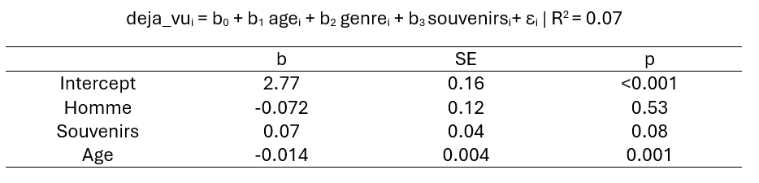

Nos analyses ont montré que l’âge a un impact sur la manière dont nous rêvons : les personnes plus âgées déclarent moins se souvenir de leurs rêves, elles ont aussi moins de sentiments de déjà-vu et elles savent moins si elles rêvent en couleur ou en noir et blanc. Notre premier résultat est déjà bien connu de la communauté scientifique, vous pouvez retrouver plusieurs références au sujet de l’âge et des rêves dans la section bibliographie.
Nous avons également trouvé que plus se souvenir de ses rêves change certaines choses : les personnes qui déclarent se souvenir plus de leurs rêves savent plus s’elles rêvent en noir et blanc ou en couleur, elles déclarent aussi plus avoir déjà eu un rêve qui a influencé une de leurs actions et elles ont plus souvent eu l’impression que leurs rêves étaient prémonitoires.
Nous aurions pu penser que le genre influencerait les résultats, comme cela a été montré dans une étude disponible en bibliographie, qui souligne que les femmes se souviennent mieux de leurs rêves que les hommes. Nous n’avons pas retrouvé ce résultat, ce qui peut être dû à la taille de notre échantillon, beaucoup plus faible que dans l’étude mentionnée, à notre proportion d’hommes assez faible, ou au fait que cet effet est faible, donc difficile à détecter, surtout dans de petits échantillons. La détection de phénomènes en statistiques dépend beaucoup de la taille de l'échantillon
Cette section a pour but de présenter comment nous avons obtenu les résultats évoqués ci-dessus. Nous allons vous présenter la démarche statistique et le modèle utilisé. Vous pouvez regarder la vidéo ci-dessous pour avoir un résumé de la section, et vous trouverez des informations détaillées en dessous.
Pour mener nos analyses, nous avons utilisé différents modèles statistiques : la régression linéaire, la régression ordinale et la régression logistique. Ce sont trois modèles mathématiques dont le principe est assez simple : on veut prédire une chose en fonction de plusieurs autres éléments. Ce qu’on veut prédire est appelé variable dépendante et les autres éléments sont appelées variables indépendantes. Le type de modèle choisi dépend de la nature de la variable dépendante, c’est-à-dire des valeurs qu’elle peut prendre. Par exemple, si une variable ne prend que deux valeurs, c’est une variable binaire. Dans la démarche statistique, on définit d’abord une problématique claire, puis on pose le modèle que l’on va utiliser.
Un modèle est toujours de cette forme là : variable1 = b0 + b1variable2 + b3variable3 +ε . La variable 1 est la variable dépendante, et les autres sont les variables indépendantes ou explicatives. Les b sont appelés les coefficients et ils permettent de mesurer l’effet de chaque variable indépendante sur la variable dépendante qu’on veut prédire. Le petit epsilon correspond à l’erreur d’estimation que fait le modèle par rapport aux données réelles.
Quand on fait une analyse de données, on teste si les biais qu’on trouve dans notre échantillon de population se retrouvent aussi dans la population générale. Pour vérifier si les résultats qu’on observe sont compatibles avec une répartition équilibrée des probabilités, on simule plusieurs fois la même expérience en supposant que tous les résultats ont la même chance d’arriver. On utilise ensuite la p-value pour mesurer la significativité du test : c’est une valeur qui indique la probabilité d’obtenir des résultats aussi extrêmes que les nôtres si l’hypothèse d’équiprobabilité était vraie. Si cette probabilité est très faible (inférieure à 5 %), on considère que nos résultats sont peu compatibles avec le hasard, et on peut alors remettre en question l’hypothèse d’équiprobabilité. Ce seuil de 5 %, cependant, reste un choix arbitraire.
Pour cette analyse, nous avons voulu nous demander est-ce qu’il y a une différence d’âge et de genre dans le fait d’avoir des sentiments de déjà-vu. Pour tester cela, nous avons posé le modèle suivant et obtenu ces résultats.
Cela signifie que quand on gagne 1 an, la probabilité d’avoir des sentiments de déjà-vu fréquents baisse d’environ 0.016. Ce résultat est significatif (p < 0.001, donc en dessous du seuil des 5%), on peut donc conclure que ce biais est présent dans la population générale et non pas uniquement dans notre population échantillonnée. Concernant le genre, on observe qu’être un homme baisse la probabilité d’avoir des sentiments de déjà-vu de 0.098. Cependant, la p-value est supérieure au seuil des 5% (p = 0.4). On observe donc que ce biais est présent dans notre échantillon, mais nous ne pouvons pas conclure sur si ce biais est réellement présent dans la population générale.
Nous avons refait la même analyse en ajoutant une variable en plus, celle du souvenir, pour évaluer l’influence de plus se souvenir de ses rêves sur le fait d’avoir des sentiments de déjà-vu. Nous n’obtenons pas de nouveaux résultats significatifs par rapport à la première analyse. En revanche, on obtient un R2 un petit peu plus élevé : 0.07 contre 0.058, ce qui signifie que le deuxième modèle explique 7% de la variable deja_vu tandis que le premier explique 5,8%. Le deuxième modèle est donc meilleur. Le R2 est un outil très utilisé en statistiques pour essayer de trouver un bon modèle, c’est pourquoi il est toujours précisé dans une analyse.
Dans cette analyse, nous nous sommes demandées s’il y avait une différence selon l’âge et le genre dans la fréquence de souvenirs des rêves. Pour tester cela, nous avons posé le modèle suivant et obtenu ces résultats.
Cette analyse montre que plus on vieillit, moins on se souvient de nos rêves (b1= -0.016, p = 0.02). Cet effet a été montré dans l’étude de Nielsen, disponible en bibliographie.
On remarque aussi qu’être un homme baisse la probabilité de plus se souvenir de ses rêves, mais cet effet n’est pas significatif (p = 0.065). Cet effet a pourtant été montré dans l’étude de Nielsen. Le seuil de significativité est donc bien arbitraire, et la significativité d’un effet dépend beaucoup de la taille de l’échantillon : nous avons remarqué en faisant nos analyses qu’avec 180 personnes, l’effet n’était pas significatif mais qu’avec 250 il le devenait.
Dans cette analyse, nous nous sommes demandées qu’est-ce qui pouvait influencer le fait de savoir ou de ne pas savoir en quelle couleur on rêve. Pour tester cela, nous avons posé le modèle suivant et obtenu ces résultats.
Cette analyse montre que plus on se souvient de ses rêves, plus on sait en quelle couleur on rêve (b3= 0.39, p = 0.02). On voit aussi que plus on vieillit, en supposant que la fréquence de souvenirs des rêves ne change pas, moins on sait si on rêve en noir et blanc ou en couleur (b1 = -0.045, p = 0.001).
On remarque aussi qu’être un homme augmente la probabilité de savoir en quelle couleur on rêve, mais que cet effet n’est pas significatif (b2 = 0.57, p = 0.26).
Dans cette analyse, nous nous sommes demandées si les gens qui déclarent avoir déjà été influencés par un de leurs rêves se souviennent plus de leurs rêves. Pour tester cela, nous avons posé le modèle suivant et obtenu ces résultats. Nous avons ajouté les variables âge et genre au modèle car ces variables peuvent à la fois influencer le souvenir des rêves, mais aussi le fait de déclarer avoir déjà été influencé par un rêve : ce sont des variables confondantes, et il faut les prendre en compte pour avoir des résultats corrects.
Cette analyse montre que le fait de se souvenir plus de ses rêves augmente la probabilité de déclarer avoir déjà été influencé par un rêve (b3 = 0.16, p = 0.02).
On remarque aussi qu’être un homme augmente cette probabilité et qu’être plus âgé la baisse, mais ces deux effets ne sont pas significatifs (respectivement, b2 = 0.09, p = 0.61 et b1 = -0.01, p = 0.13).
Dans cette analyse, nous nous sommes demandées si les gens qui déclarent avoir déjà eu l’impression qu’un rêve était prémonitoire se souviennent plus de leurs rêves. Pour tester cela, nous avons posé le modèle suivant et obtenu ces résultats. Comme dans l’analyse précédente, nous avons ajouté l’âge et le genre comme variables confondantes.
Cette analyse montre que le fait de se souvenir plus de ses rêves augmente la probabilité de déclarer avoir déjà eu l'impression qu'un rêve était prémonitoire (b3 = 0.23, p = 0.002).
On remarque aussi qu’être un homme baisse et qu’être plus âgé baissent cette probabilité, mais ces deux effets ne sont pas significatifs (respectivement, b2 = -0.23, p = 0.26 et b1 = -0.0041, p = 0.59).
Certains notebook contiennent des analyses non présentées sur cette page, car aucun résultat n'était significatif.